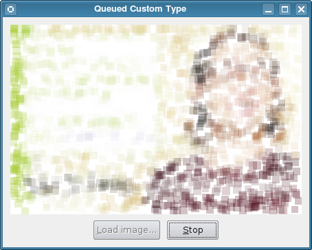

Queued Custom Type
The Queued Custom Type example shows how to send custom types between threads with queued signals and slots.

Contents:
Overview
In this example, we create a value class, Block, and register it with the meta-object system to enable us to send instances of it between threads using queued signals and slots.
The Block Class
The Block class provides the default constructor, copy constructor, and a destructor in the public section of the class as required by the meta-object system. The class describes a colored rectangle.
class Block { public: Block(); Block(const Block &other); ~Block(); Block(const QRect &rect, const QColor &color); QColor color() const; QRect rect() const; private: QRect m_rect; QColor m_color; }; Q_DECLARE_METATYPE(Block);
We will still need to register it with the meta-object system at run-time by calling the qRegisterMetaType() template function before we make any signal-slot connections that use this type. Even though we do not intend to use the type with QVariant in this example, it is good practice to also declare the new type with Q_DECLARE_METATYPE().
The implementation of the Block class is trivial, so we avoid quoting it here.
The Window Class
We define a simple Window class with a public slot that accepts a Block object. The rest of the class is concerned with managing the user interface and handling images.
class Window : public QWidget { Q_OBJECT public: Window(QWidget *parent = nullptr); void loadImage(const QImage &image); public slots: void addBlock(const Block &block); private slots: void loadImage(); void resetUi(); private: QLabel *label; QPixmap pixmap; QPushButton *loadButton; QPushButton *resetButton; QString path; RenderThread *thread; };
The Window class also contains a worker thread, provided by a RenderThread object. This will emit signals to send Block objects to the window's addBlock(Block) slot.
The parts of the Window class that are most relevant are the constructor and the addBlock(Block) slot.
The constructor creates a thread for rendering images, sets up a user interface containing a label and two push buttons that are connected to slots in the same class.
Window::Window(QWidget *parent) : QWidget(parent), thread(new RenderThread(this)) { label = new QLabel(this); label->setAlignment(Qt::AlignCenter); loadButton = new QPushButton(tr("&Load image..."), this); resetButton = new QPushButton(tr("&Stop"), this); resetButton->setEnabled(false); connect(loadButton, &QPushButton::clicked, this, QOverload<>::of(&Window::loadImage)); connect(resetButton, &QPushButton::clicked, thread, &RenderThread::requestInterruption); connect(thread, &RenderThread::finished, this, &Window::resetUi); connect(thread, &RenderThread::sendBlock, this, &Window::addBlock);
In the last of these connections, we connect a signal in the RenderThread object to the addBlock(Block) slot in the window.
...
setWindowTitle(tr("Queued Custom Type"));
}
The rest of the constructor simply sets up the layout of the window.
The addBlock(Block) slot receives blocks from the rendering thread via the signal-slot connection set up in the constructor:
void Window::addBlock(const Block &block) { QColor color = block.color(); color.setAlpha(64); QPainter painter; painter.begin(&pixmap); painter.fillRect(block.rect(), color); painter.end(); label->setPixmap(pixmap); }
We simply paint these onto the label as they arrive.
The RenderThread Class
The RenderThread class processes an image, creating Block objects and using the sendBlock(Block) signal to send them to other components in the example.
class RenderThread : public QThread { Q_OBJECT public: RenderThread(QObject *parent = nullptr); ~RenderThread(); void processImage(const QImage &image); signals: void sendBlock(const Block &block); protected: void run(); private: QImage m_image; };
The constructor and destructor are not quoted here. These take care of setting up the thread's internal state and cleaning up when it is destroyed.
Processing is started with the processImage() function, which calls the RenderThread class's reimplementation of the QThread::run() function:
void RenderThread::processImage(const QImage &image) { if (image.isNull()) return; m_image = image; start(); } void RenderThread::run() { const int size = qMax(m_image.width()/20, m_image.height()/20); for (int s = size; s > 0; --s) { for (int c = 0; c < 400; ++c) {
Ignoring the details of the way the image is processed, we see that the signal containing a block is emitted in the usual way:
...
const Block block(QRect(x1, y1, x2 - x1 + 1, y2 - y1 + 1),
QColor(red/n, green/n, blue/n));
emit sendBlock(block);
if (isInterruptionRequested())
return;
msleep(10);
}
}
}
Each signal that is emitted will be queued and delivered later to the window's addBlock(Block) slot.
Registering the Type
In the example's main() function, we perform the registration of the Block class as a custom type with the meta-object system by calling the qRegisterMetaType() template function:
int main(int argc, char *argv[]) { QApplication app(argc, argv); qRegisterMetaType<Block>(); Window window; window.show(); window.loadImage(createImage(256, 256)); return app.exec(); }
This call is placed here to ensure that the type is registered before any signal-slot connections are made that use it.
The rest of the main() function is concerned with setting a seed for the pseudo-random number generator, creating and showing the window, and setting a default image. See the source code for the implementation of the createImage() function.
Further Reading
This example showed how a custom type can be registered with the meta-object system so that it can be used with signal-slot connections between threads.
In practice, both the Q_DECLARE_METATYPE() macro and the qRegisterMetaType() template function can be used to register custom types, but qRegisterMetaType() is only required if you need to perform signal-slot communication or need to create and destroy objects of the custom type at run-time.
More information on using custom types with Qt can be found in the Creating Custom Qt Types document.